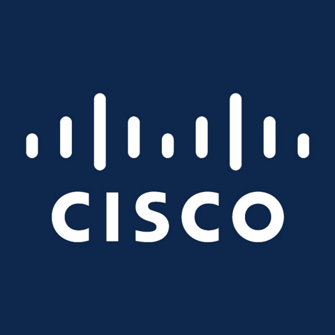

Partners & support
Who helps make it happen
The elective is free for students. Industry support covers the practical costs, mainly the dinners that keep people in the room, within clear conflict-of-interest guardrails.
Support
Sponsors

SponsorMore support is being confirmed for the Fall 2026 cohort.
Affiliations
Affiliations and network
Beyond sponsorship, the elective is connected to a wider set of institutions through our team and speakers. These are relationships and affiliations, not formal partnerships.
See the network for the full regional and national ecosystem the elective engages.
How support works
Support goes to logistics, not influence. Sponsorship underwrites the light dinners and hosting for each session and is disclosed to students up front.
There is a firm no-product-promotion rule for any sponsor-supported session, and everything follows UMass Chan conflict-of-interest and disclosure policies. Funds are stewarded by the student organization forming alongside the elective.
Get involved
Support the elective
If your team wants to help a room of medical students meet the people building healthcare, whether by sponsoring a dinner or sending a speaker, we would like to talk.
Email the teamSasha Hussain · Sasha.Hussain3@umassmed.edu